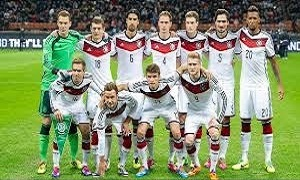

Germany are well on their way to qualifying for the 2018 FIFA World Cup in Russia. Of course, that was widely considered a fait accompli even before the groups were drawn in July 2015.Still, Joachim Low's side's perfect record of five wins in five matches in the qualifiers so far, with a combined scoreline of 20-1, is impressive—only one team, Switzerland in Group B, can match the world champions' 100 per cent record. The question isn't so much whether Germany will qualify for the finals, rather how their squad will look by then.
The team has gone through a few changes since hoisting the trophy in Rio de Janeiro's Maracana Stadium in 2014. Most notably, key figures such as captain Philipp Lahm, World Cup-record goalscorer Miroslav Klose and midfield general Bastian Schweinsteiger have ended their international careers, as have centre-back Per Mertesacker and fan favourite Lukas Podolski.
The core of the squad is still formed by battle-tested veterans who won their country its long-awaited fourth World Cup, but Low has steadily introduced new faces as well. The mixture between the two factions will likely shape Germany's team in 2018. Read on for Bleacher Report's prediction of the squad Low will take to Russia, a position-by-position look at the 23 men who will try to do what nobody has managed since Brazil in 1962: successfully defend their World Cup title.
Bernd Leno's place in the 23-men squad is arguably the least secure among their goalkeepers, but it would still be surprising to see him miss out on the World Cup.Ter Stegen has clearly left him behind after they were considered neck-and-neck for years, not least because Leno has yet to make the jump from Bayer Leverkusen to a major European club. Unless Kevin Trapp or someone like FC Cologne's Timo Horn play incredible 2017/18 seasons for their clubs, Leno should be Low's choice as the third-string goalkeeper. 25-year-old is fairly quiet and will not cause any problems by demanding playing time. In that regard, he is just like Ron-Robert Zieler, who was the perfect third man for Germany in 2014. Joshua Kimmich came out of nowhere to become a regular starter at right-back for Germany. Joshua Kimmich came out of nowhere to become a regular starter at right-back for Germany.Jean Catuffe/Getty Images While most would argue his best position remains in central midfield, Joshua Kimmich has a firm grip on the starting spot at right-back under Low. The youngster has started and played every second of every Germany match since the last game of the group stage at Euro 2016 against Northern Ireland—which is all the more impressive considering he had won just one senior cap before then.
Kimmich's sophomore campaign at Bayern isn't going too smoothly, as Pep Guardiola had more use for him than his successor, Carlo Ancelotti. But the 22-year-old is expected to take over from Lahm at right-back next season, as chief executive Karl-Heinz Rummenigge indicated earlier in 2017, per Stefan Coerts of Goal. Jonas Hector is as steady as they come. Jonas Hector is as steady as they come.Jean Catuffe/Getty Images Much like Kimmich on the right side of defence, Cologne's Jonas Hector seems a lock to start for Germany at left-back. The solid and steady 26-year-old has missed just two international games since first getting called up in November 2014 and has started every competitive game for his country since March 2015. That includes Euro 2016, where he played every minute of every game and became the unlikeliest of heroes in the penalty shootout against Italy in the quarter-finals. The only Germany international to come out of lower-league football and not one of the country's famed youth academies, Hector's reliability is clearly valued by Low.
With Borussia Dortmund's Marcel Schmelzer continuously overlooked for Germany, Hector is likely to be the only left-back Low will take to Russia. Centre-Back: Jerome Boateng (Bayern Munich) 6 OF 24 Jerome Boateng's goal-line clearance against Ukraine was one of the highlights of Euro 2016. Jerome Boateng's goal-line clearance against Ukraine was one of the highlights of Euro 2016.Matthew Ashton - AMA/Getty Images Jerome Boateng was Germany's best player at Euro 2016 and, as Stephan Uersfeld of ESPN noted: "(Boateng) grew into a natural leader role on and off the pitch." With the tournament following his incredible performance in the 2014 World Cup final, the Bayern Munich man firmly established himself as one of the best central defenders on the planet. The only concern with the 28-year-old is his growing list of injuries, as Boateng has missed 18 matches for his club this season with various ailments. Health permitting, the imperious centre-back will remain an anchor in Germany's defence in Russia. Centre-Back: Mats Hummels (Bayern Munich) 7 OF 24 Mats Hummels has become indispensable for Germany. Mats Hummels has become indispensable for Germany.Jean Catuffe/Getty Images Boateng's performances have almost overshadowed those of Mats Hummels, the Bayern returnee putting together three strong tournaments in a row for Germany in his own right. Now firmly in the prime of his career, the former Borussia Dortmund man should be able to make it four in a row in Russia. The fact that three out of four predicted starters in Germany's defence will likely play in the same positions at Bayern will be an added bonus for a team that only conceded one goal from open play during the Euros in France. Centre-Back: Benedikt Howedes (FC Schalke 04) 8 OF 24 Benedikt Howedes' versaility makes the Schalke man a valuable member of the team. Benedikt Howedes' versaility makes the Schalke man a valuable member of the team.TF-Images/Getty Images A paragon of consistency, FC Schalke 04 captain Benedikt Howedes will always have a spot on Low's team. The natural centre-back has started all over Germany's defence during his international career, for example, playing every minute of every game for the team at left-back in Brazil in 2014. A one-club man, the dependable Howedes is an ideal squad member thanks to his quality as a multipurpose back-up.
Taking him to Russia will allow Low to cut numbers at the full-back spot, in turn making the inclusion of another potential difference-maker in the attacking ranks possible. Centre-Back: Shkodran Mustafi (Arsenal) 9 OF 24 Shkodran Mustafi is another defender with valuable versatility. Shkodran Mustafi is another defender with valuable versatility.Chris Brunskill Ltd/Getty Images A surprise inclusion for the 2014 World Cup, Shkodran Mustafi has been a steady presence for Germany since the tournament in Brazil. While he is rarely considered starting material with everyone healthy, the Arsenal defender has proved a dependable back-up for Low. Playing right-back as well as centre-back for Germany, Mustafi can be likened to Howedes. His spot in the squad should be similarly secure—unless a potential new manager at Arsenal has little use for the 2016 summer signing, which doesn't seem likely. Centre-Back: Niklas Sule (1899 Hoffenheim/Bayern Munich) 10 OF 24 Niklas Sule's play for Hoffenheim has earned him a move to Bayern in the summer. Niklas Sule's play for Hoffenheim has earned him a move to Bayern in the summer.Simon Hofmann/Getty Images One of the leading figures of TSG Hoffenheim's strong season in the Bundesliga, Niklas Sule has already secured himself a move to Bayern in the summer. Playing with the likes of Boateng, Hummels, Kimmich and Neuer should give the 21-year-old an important leg up over a similarly talented player such as Jonathan Tah. While Sule has only won one senior cap for Germany to this point, he's clearly a man of the future for the national team and taking him to Russia will serve as valuable experience if nothing else. With other centre-backs possibly needed to fill in at full-back during the tournament, Sule could find himself on the pitch before long. Central Midfield: Toni Kroos (Real Madrid) 11 OF 24 Toni Kroos is already one of the most-decorated German players of all time. Toni Kroos is already one of the most-decorated German players of all time.KIRILL KUDRYAVTSEV/Getty Images Even before Schweinsteiger's retirement following Euro 2016, Toni Kroos had taken over the reins in Germany's midfield.
The Real Madrid star is the team's passing metronome and arguably the key to their entire game. After bossing the middle of the park in every game in France, Kroos will enter the 2018 World Cup at 28 years of age—the prime of a central midfielder's career. Even with Neuer or Boateng arguably at the top of the game at their respective positions, it's not a stretch to call Kroos the best German player at this stage of his career. Central Midfield: Sami Khedira (Juventus) 12 OF 24 The eloquent Sami Khedira is as important off the field as he is on it. The eloquent Sami Khedira is as important off the field as he is on it.KIRILL KUDRYAVTSEV/Getty Images Even though one could argue Sami Khedira has played better at the club level than he has for Germany over the last few years, the Juventus midfielder remains an integral part of Low's squad, not only for his high-motor playing style in the middle of the park, but also because he's one of the unquestioned leaders of the team. Khedira was hampered by injuries both in Brazil and France and could conceivably be more of a part-time starter in Russia, but there's little doubt he will make the team for as long as Low—one of the 29-year-old's mentors—remains at the helm. Central Midfield: Julian Weigl (Borussia Dortmund) 13 OF 24 Julian Weigl's maturity beyond his years may be his most impressive quality. Julian Weigl's maturity beyond his years may be his most impressive quality.Boris Streubel/Getty Images Dortmund's Julian Weigl is consistency personified. An incredibly accurate passer and intelligent central midfielder, the 21-year-old is a future starter and was ennobled by Kroos earlier in March. When asked during a Twitter Q&A which young player reminded him of himself, the Madridista replied: "Julian Weigl is going to be a world class player."
Some would argue he's not far off that lofty tag, as Weigl has played an exceptional Champions League campaign for Dortmund so far. For Germany, the midfielder will likely travel to Russia to learn and perhaps come off the bench to close games out thanks to his ball-retention qualities. Central Midfield: Ilkay Gundogan (Manchester City) 14 OF 24 When healthy, Ilkay Gundogan has added flair and quality to Germany's midfield. When healthy, Ilkay Gundogan has added flair and quality to Germany's midfield.TF-Images/Getty Images One of the great unknowns in our prediction is Ilkay Gundogan. When healthy, the 26-year-old is a world-class midfielder who would likely start next to Kroos in most games. However, fitness has been the former Dortmund man's greatest nemesis, as Gundogan has missed both the 2014 World Cup and Euro 2016 with devastating injuries. Currently once again out for months with a torn anterior cruciate ligament, the loss of Gundogan has proved to be massive for Guardiola at Manchester City. If he can come back from his latest knee injury and play to his level, Gundogan will be a welcome addition to an already-strong Germany side. If he cannot, it likely opens the door for Emre Can. Central Midfield: Sebastian Rudy (TSG Hoffenheim/Bayern Munich) 15 OF 24 Like Sule, Sebastian Rudy will play for Bayern next season. Like Sule, Sebastian Rudy will play for Bayern next season.PATRIK STOLLARZ/Getty Images In most Germany squads since Low has been involved with the team, there was at least one player included who qualified as little more than a utility man who hardly excites fans or decides games. In 2018, that player could be Sebastian Rudy. Like Hoffenheim team-mate Sule, the versatile midfielder has impressed enough this season to earn a move to Bayern in the summer.
While it's hard to see him receive too much playing time under Ancelotti, Low clearly values Rudy's intelligence in midfield and versatility to play on the right flank, both at right-back or in a wing-back role. Attacking Midfield: Mesut Ozil (Arsenal) 16 OF 24 Mesut Ozil may not be at Arsenal by 2018, but he will be in Low's plans. Mesut Ozil may not be at Arsenal by 2018, but he will be in Low's plans.CHRISTOF STACHE/Getty Images Mesut Ozil is a strange case. His brilliance for club and country often goes unnoticed, overshadowed by discussions about his body language and a perceived phlegm. In 2014, the German football audience largely considered the Arsenal man a bystander to success, while it went almost entirely unnoticed that the 27-year-old was the country's only attacking player coming close to his best level during Euro 2016. Low, however, has always stood by Ozil and knows what he has in one of the last world-class No. 10s left on the planet. Ozil will once again be an anchor for Germany's attacking play in Russia and, probably, once again be overlooked while others receive the plaudits. Attacking Midfield: Mario Gotze (Borussia Dortmund) 17 OF 24 Mario Gotze will always be remembered for this one kick. Mario Gotze will always be remembered for this one kick.Chris Brunskill Ltd/Getty Images Mario Gotze is another unknown as we aim to predict the 23-man squad more than 12 months before it has to be filed to FIFA.
The Dortmund returnee is currently suffering from a mysterious illness his club has so far only described as "metabolic disturbances," with the aim being set "for the player to be fully fit and ready to play for the start of next season." Perhaps because of this unknown ailment, Gotze failed to meet lofty expectations during the first few months of his second stint at the Westfalenstadion, even though his performances were not outright poor. Rather, they failed to live up to the incredible talent the 24-year-old possesses. That talent, however, is what makes his inclusion in the World Cup squad likely if his return to football goes smoothly, with Low often using Gotze as a false nine up front in recent years. Winger: Thomas Muller (Bayern Munich) 18 OF 24 As a testament to the fact that time truly does fly, Thomas Muller is a veteran now. As a testament to the fact that time truly does fly, Thomas Muller is a veteran now.Boris Streubel/Getty Images Thomas Muller didn't play well at the Euros, failing to score a single goal. He is also playing an up-and-down-at-best season for Bayern, hitting only two league goals in 22 matches. However, Muller is also still one of the most important players for Low and guaranteed a spot in the 23-men squad for Russia. The 27-year-old is already one of the greatest World Cup performers in the history of the game, after scoring 10 World Cup goals in 13 matches in 2010 and 2014. He could conceivably make it into the top three of all time by scoring four goals in 2018.
Also important off the pitch as a joker in the squad, Muller would need to suffer a major injury to not figure in Low's plans. Winger: Julian Draxler (Paris Saint-Germain) 19 OF 24 Julian Draxler has blossomed since starring for Germany at the Euros. Julian Draxler has blossomed since starring for Germany at the Euros.KIRILL KUDRYAVTSEV/Getty Images Julian Draxler celebrated his coming-out party for Germany during the Euros in France, and he joined Paris Saint-Germain in the winter to keep his spot under Low. Now, that might not have been his exact thought process for joining the Ligue 1 giants, but there's no denying that life in France has been kind to Draxler. The 23-year-old finally has made the step from superb talent to superb player since starring at the Euros, and he should be considered a regular starter for Germany now. An excellent technician with surprising athleticism and a nose for goal, it would not be too surprising to see Low try Draxler up front at some point ahead of the World Cup. Winger: Marco Reus (Borussia Dortmund) 20 OF 24
Marco Reus has been Germany's tragic hero twice in a row. Third time's the charm? Marco Reus has been Germany's tragic hero twice in a row. Third time's the charm?DANIEL ROLAND/Getty Images Much like former Dortmund team-mate Gundogan, Marco Reus has missed both the 2014 World Cup and Euro 2016 through injury—news of his omission from the final squad for France coming on his 27th birthday to make matters worse. If he should finally be healthy for a tournament, Reus' impressive goalscoring nous and underrated counter-pressing qualities would make him an important figure in Germany's plans. Would Germany not be better with Reus, Draxler and Muller than, say, Draxler, Muller and Mario Gomez? Knowing Reus' tragic history, however, the likely scenario sees him again miss out, opening the door for Julian Brandt, Serge Gnabry or perhaps another full-back.
Winger: Leroy Sane 21 OF 24 Leroy Sane's development at Manchester City makes him a good option for Germany. Leroy Sane's development at Manchester City makes him a good option for Germany.Jean Catuffe/Getty Images Leroy Sane was a surprising inclusion for the Euros squad and, predictably, he only played 11 minutes in the 2-0 defeat to the hosts in the semi-finals. Still, it made sense to call up such a young player—Sane was only 20 at the time. Learning how veterans go through the grind of a long tournament was a valuable experience for the then-Schalke man. Sane has since made a big-money move to Manchester City and, after initial problems, he has won a starting spot under Guardiola thanks to his creativity, speed and dribbling skills. His starting experience at this high level could give Sane an advantage over Brandt, though the Bayer Leverkusen man may also move to a bigger club in the summer.